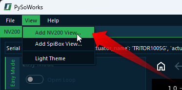
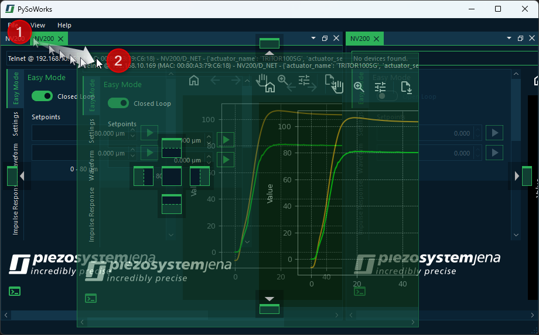
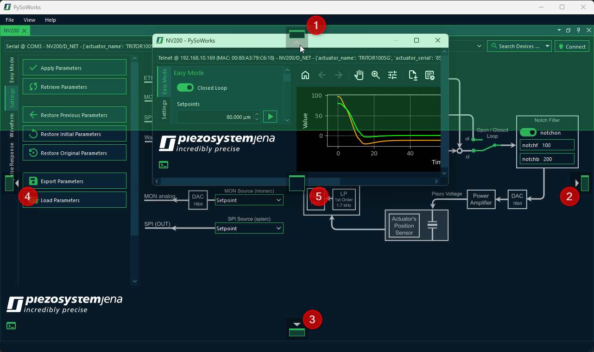
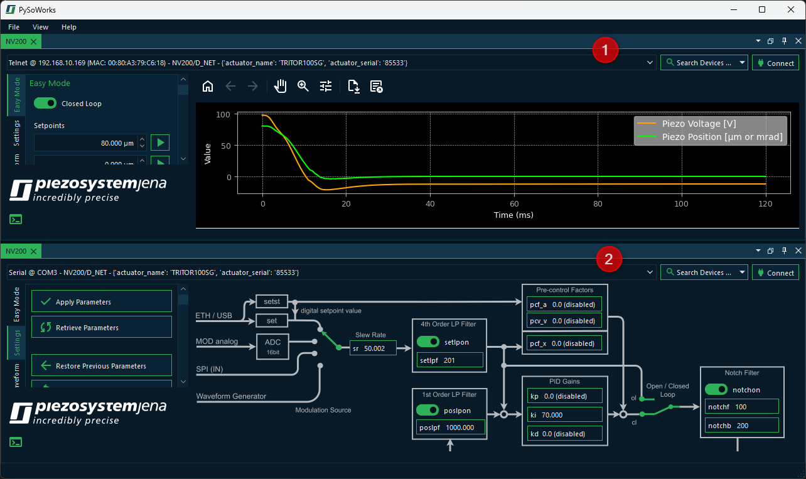

9. Working With Multiple Devices
9.1. Introduction to Multi Device control
Immediately after starting the application, you will see a window for controlling a single NV200 device. However, the software also allows you to control additional devices.
To connect to additional devices, click the menu item in the main menu.
This will add a new NV200 view as a new tab in the main window. You can switch between different NV200 views using the tab bar at the top of the window. Each tab represents a separate instance of the NV200 view, allowing you to control a different device with each single view.

9.2. Introduction to Views
The single NV200 control interfaces are organized as Views. The Views are windows that contain the display and control elements for a specific task or device.
The software provides a very flexible layout and docking system that allows you to arrange the views in the main window to your liking. All views can be freely moved within the main window via drag & drop. All views can be shown and hidden and the views can also be removed from the main window via drag & drop to move them to another screen. This allows you to adapt the user interface of the software optimally to your requirements and to arrange the device windows in a way that suits you best.
9.3. Moving Views
There are several ways to move views. The first option is Drag & Drop. To do this, click with the left mouse button on the tab of the view ❶ and simply drag the view from its position ❷ with the mouse button held down. A transparent copy of the view is displayed and follows the mouse pointer as long as you keep the mouse button pressed. This indicates that a drag & drop operation for moving a view is active. As long as you do not release the mouse button, you can move the view freely (see figure below).
If you move the view, then you can either:
drag it into a new floating window - that means, the view will be removed from the main window and a new window will be created for it
dock it to another position within the main window- this allows you to rearrange the views as needed in your main application window.
dock it to an existing floating window - in this way you can group multiple views together in a single window
This allows you to rearrange your workspace and organize your views or to pull out views to a separate screen.
9.4. Docking Views
You can dock views, or groups of views which have their own window, into the main window or any other view window via drag & drop. To do this, simply drag the window of the view over the target window into which the view/view group should be docked. The destination window will then display icons - the drop targets. These target markers indicate the areas in which the window can be inserted. If your target window contains only one view, you will see the following 5 drop targets.
In this example, the user dragged the NV200 view to the top drop target. That means, the view ❶ will be docked to the top of the other NV200 view ❷ in the main window.
